1. 动画系统
- godot中的动画其实就是一个一个图片的轮播
sprite解释，上世纪70年代，在德州电器公司，一个叫Daniel Hillis的前辈最早把Sprite这个词用在计算机图形上，在展示界面上，
有一些东西在实现层面并不是和整个画面融为一体的，而是『漂浮』在其他画面之上，像『幽灵』一样，所以被称为Sprite。
一张一张的图片组成了一个会动的精灵
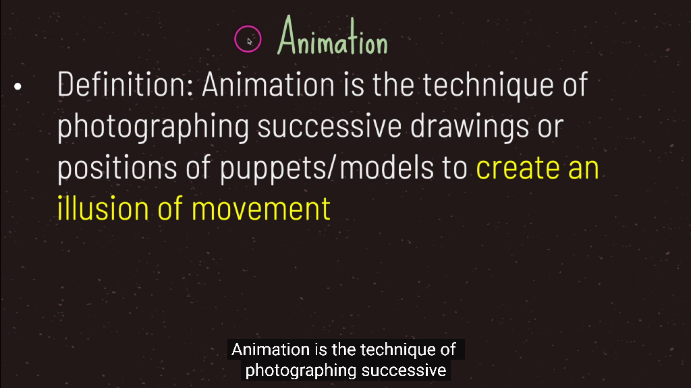 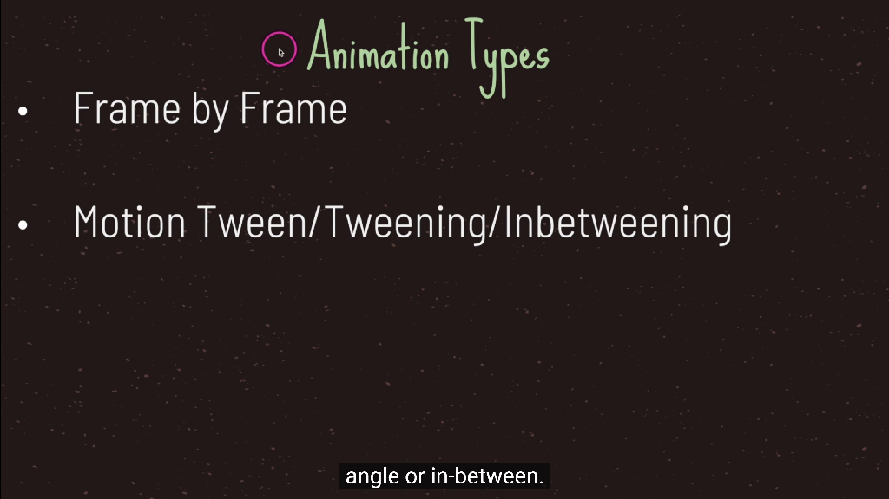 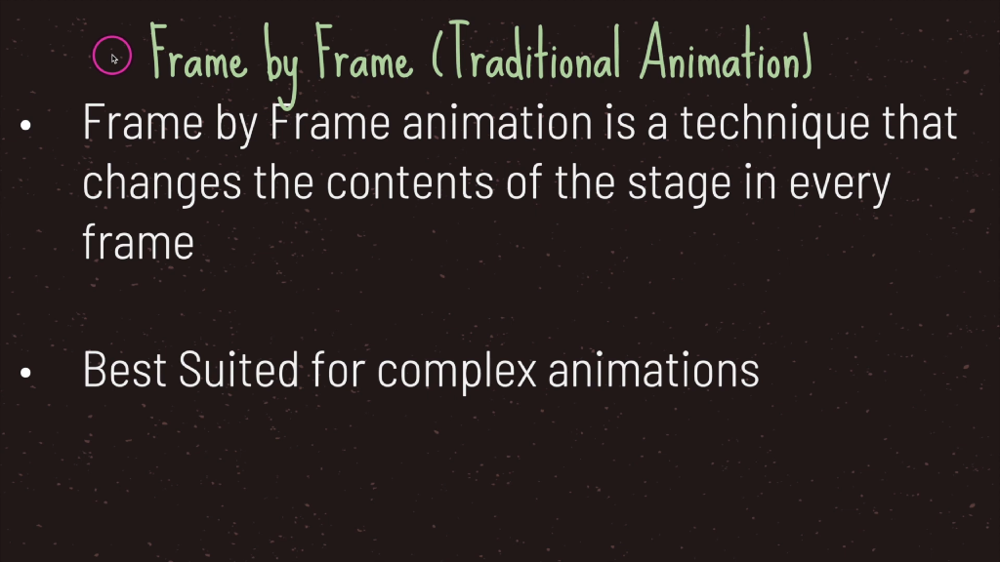 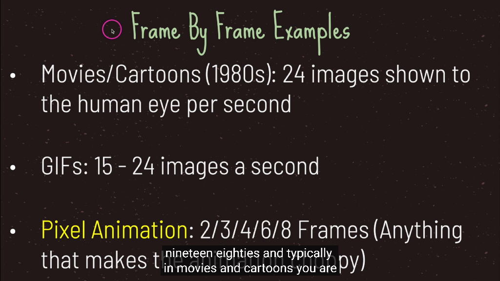 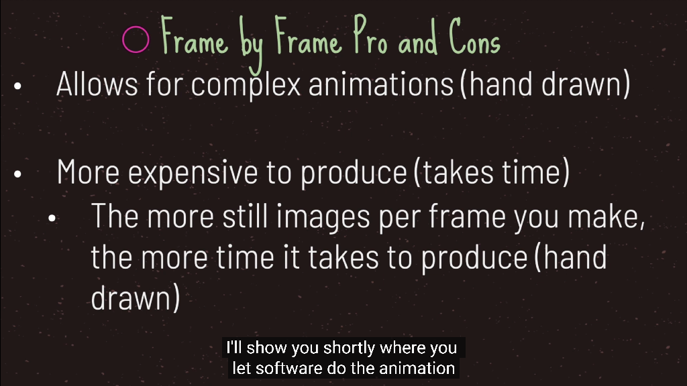
- godot内置了通用的动画系统用以实现基于关键帧的动画。
除了支持标准的位移、旋转、缩放动画和帧动画之外，还支持任意组件属性和用户自定义属性的驱动，
再加上可任意编辑的时间曲线和创新的移动轨迹编辑功能，能够让内容生产人员不写一行代码就制作出细腻的各种动态效果。
2. Timer节点实现动画
-
Timer节点，意思是计时器秒表，在godot中可以利用他的定时器特性来实现动画帧
-
看名字就知道这是一个“计时器”。在 Godot 中一切皆节点，所以看到这种纯功能性的节点不要觉得奇怪
-
我们完全可以不使用节点，直接使用代码 Timer.new() 动态创建一个计时器也是没任何问题的；
Timer 时间计时器节点的属性非常简单，根据需求可以设置其等待时间、重复计时以及是否自动开始，这些属性我们也可以在 GDScript 脚本中使用代码修改：
wait_time ：等待时间，即计时时长，结束触发 timeout 信号
one_shot ：是否是一次性，如果是，只会触发一次 timeout 信号
autostart ：自动开始，载入场景后计时，也可以使用 start 方法手动开启
3. Tween节点实现动画
-
在游戏开发过程中，我们一般使用 AnimationPlayer 节点来实现移动、缩放、颜色渐变等动画效果
-
Tween 即渐进/过渡的意思，从一种状态在一定时间内变化到另一种状态，从而产生一种视觉动画。
-
渐变节点使用非常简单方便，可以对一个物体的任意属性进行动画控制，当然，也可以同时处理多个动画对象。其主要方法有以下几个：
repeat ：是否重复
start() ：开始渐变，结束后触发 tween_completed 信号
interpolate_property() ：设置进行动画的节点属性以及时长等，需要传递属性名称、开始结束值、时长等参数
这里最重要的方法是 interpolate_property() ，可以在 Godot 编辑器中按 F4搜索 Tween 类进行查看。
当然，和 Timer 节点一样，我们完全可以在代码中动态创建Tween 对象。
Smoothly animates a node's properties over time.
Tweens are useful for animations requiring a numerical property to be interpolated over a range of values.
The name tween comes from in-betweening, an animation technique where you specify keyframes and the computer interpolates the frames that appear between them.
Tween is more suited than AnimationPlayer for animations where you don't know the final values in advance.
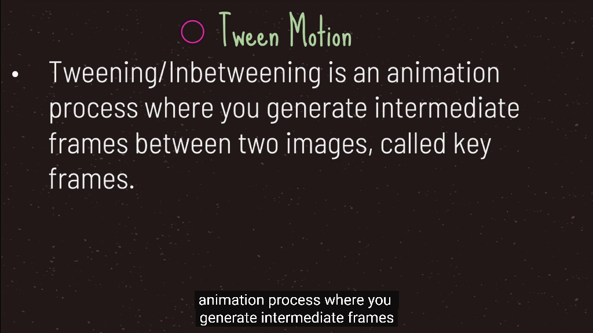 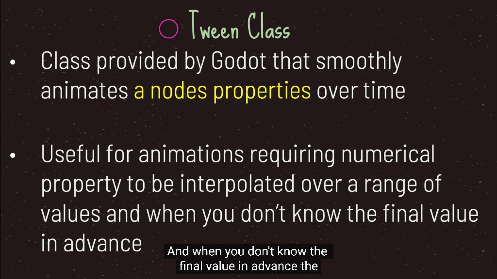 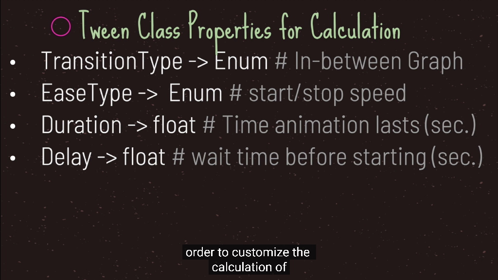 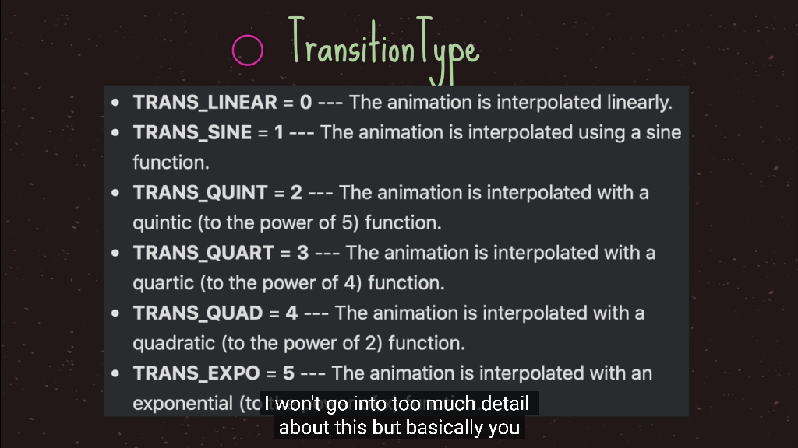 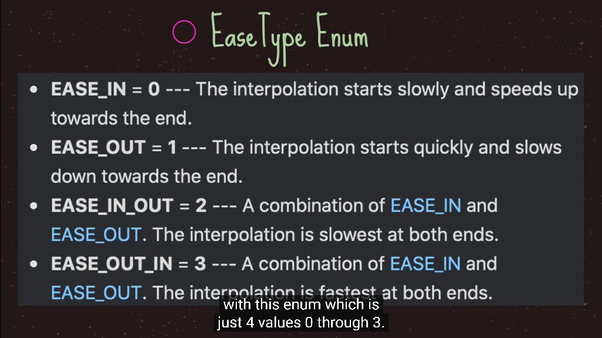 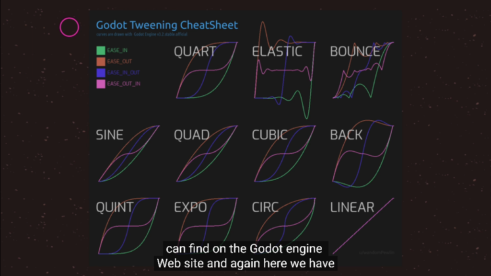
4. AnimationPlayer节点实现动画
- AnimationPlayer是时间和属性的变化，是一种动画的表现
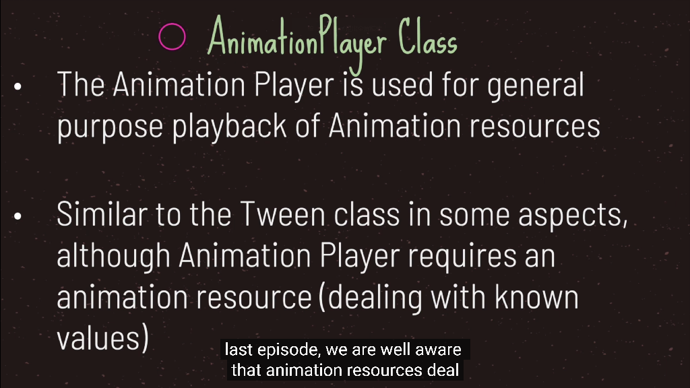
5. AnimatedSprite节点实现动画
- AnimatedSprite是序列帧的简便的用法
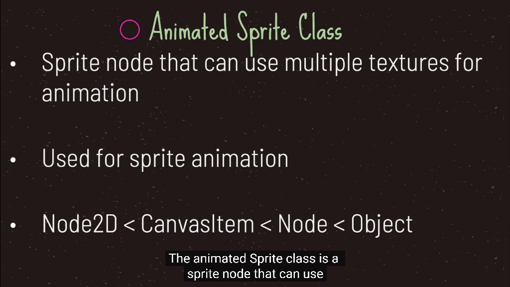 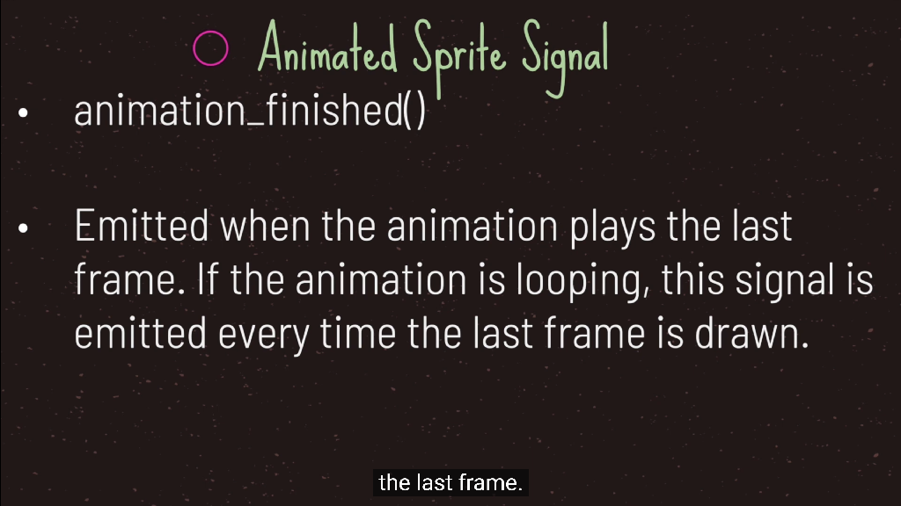 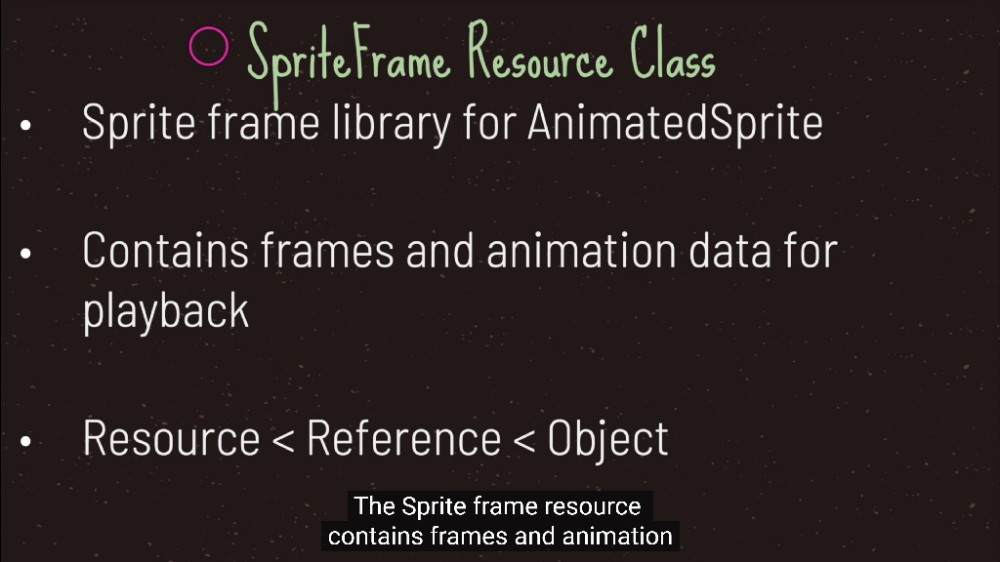